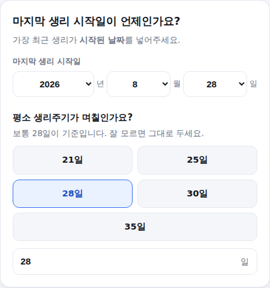
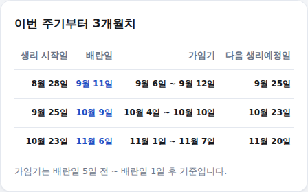

임신을 준비 중이거나 생리주기를 관리하고 싶다면 배란일과 가임기가 언제인지가 가장 궁금하실 겁니다. 배란일 계산기는 마지막 생리 시작일과 생리주기만 넣으면 배란일·가임기·다음 생리예정일을 3개월치 표로 계산해드립니다. 쓰는 법은 아래와 같습니다.
-
마지막 생리 시작일·생리주기 입력
마지막 생리 시작일을 연도·월·일 드롭다운에서 선택하세요. 이어서 평소 생리주기(일수)도 입력해주세요. 보통 28일이 기준이며, 잘 모르면 그대로 두어도 됩니다. 빠른 주기 버튼을 눌러도 됩니다.

마지막 생리 시작일·생리주기 입력 화면
-
결과 확인 — 가장 가까운 배란일
맨 위에 가장 가까운 배란일이 크게 나오고, 그 아래 오늘 기준 D-day와 해당 주기의 가임기가 함께 표시됩니다.
가장 가까운 배란일 결과 화면
-
이번 주기부터 3개월치 표 확인
아래 표에서는 이번 주기를 포함해 앞으로 3개월치의 생리 시작일·배란일·가임기·다음 생리예정일을 한 번에 확인할 수 있습니다. 임신 준비 계획을 몇 달치 미리 세울 때 유용합니다.

3개월치 결과 표
배란일 계산 방식
배란일은 생리 시작일에 (생리주기 − 14일)을 더한 날짜입니다. 배란 후 다음 생리까지의 기간(황체기)은 사람마다 큰 차이 없이 대부분 14일 전후로 일정하기 때문에, 생리주기 길이와 관계없이 배란일은 항상 다음 생리 예정일의 14일 전으로 계산합니다.
가임기 계산 방식
가임기는 배란일 5일 전부터 배란일 1일 후까지입니다. 정자는 여성 체내에서 최대 5일, 난자는 약 24시간 생존할 수 있기 때문입니다. 임신 확률이 가장 높은 시기는 배란일 1~2일 전입니다.
계산은 참고용입니다. 기준: 황체기 14일 기준 배란일 추정 공식, 2026년 기준 정리.